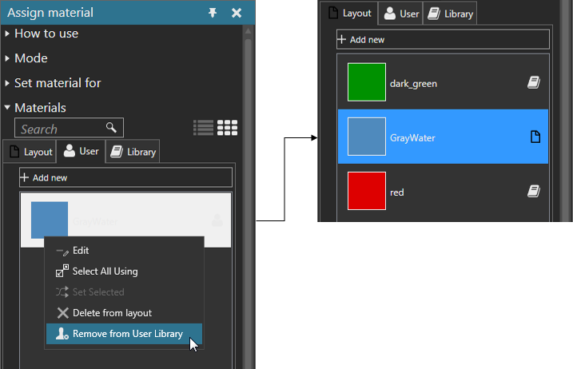

Removing Material from User Library
You can remove a material stored in a user library. This does not delete a material from a layout.
- On the Modeling tab, in the Geometry group, click the Tools arrow, and then under Material, click Assign.
- In the Assign material task pane, expand Materials, and then click the User tab, and then find a material.
- Right-click the material, and then click Remove from User Library.
Example. Remove a material from user library
